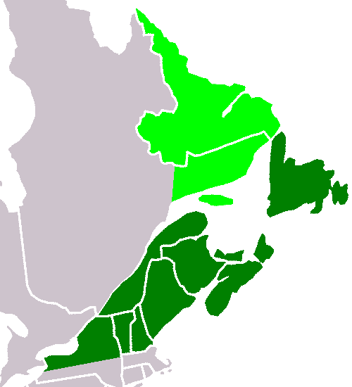

Atlantica (Greek: Ατλαντικα; Atlantika) is an ancient continent that formed during the Proterozoic about 2,000 million years ago (two billion years ago, Ga) from various 2 Ga cratons located in what are now West Africa and eastern South America. [1] The name, introduced by Rogers 1996, was chosen because the parts of the ancient continent are now located on opposite sides of the South Atlantic Ocean.
Atlantica formed simultaneously with Nena at about 1.9 Ga from Archaean cratons, including Amazonia in present-day South America, and the Congo, West Africa and North Africa Cratons in Africa.
Atlantica separated from Nena between 1.6–1.4 Ga when Columbia — a supercontinent composed of Ur, Nena, and Atlantica — fragmented. [2] Atlantica and continents Nena and Ur and some minor plates formed the supercontinent Rodinia about 1 Ga ago. Between 1–0.5 Ga Rodinia split into three new continents: Laurasia and East and West Gondwana; Atlantica became the nucleus of West Gondwana. [1] During this later stage, the Neoproterozoic era, a Brasiliano-Pan African orogenic system developed. The central part of this system, the Araçuaí-West Congo orogen, has left a distinct pattern of deformations, still present on both sides of the Atlantic Ocean
